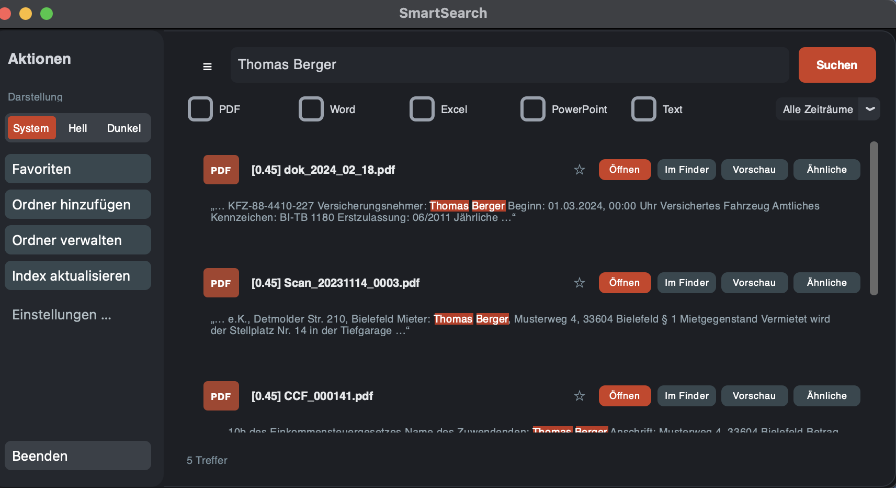

You know what it says.
You just can’t recall what it’s called.
System search compares strings of characters. SmartSearch reads what your documents are about and finds them from a description — entirely on your Mac, without a single file ever leaving it.
Free · Version 1.0.1 · 296 MB
macOS 12 or later · Apple Silicon and Intel

01
Always one gesture away
SmartSearch sits in the menu bar. A click on the magnifier brings the window forward — or Command-Shift-F, from inside any application, without interrupting what you were doing.
02
An empty window
After launch there is nothing but a search field. No account, no sign-in, no setup wizard to click through first.
03
Choose your folders
The actions live on the left. You decide which folders are searched — Documents, Desktop, a project folder on an external drive. As many as you like, changeable at any time.
04
Read in once
SmartSearch works through the folders and notes what each document is about. That takes a few minutes and happens only once — after that, changes are picked up on their own.
05
Describe instead of name
You type what it was about. The results appear straight away, with the matching passage from the text — even when the filename contains none of it.
06
Look inside without opening
A click on “Preview” shows the document without starting Word or the PDF viewer. With twenty results that saves twenty application launches.
07
And what belongs with it
“Similar” takes one result as a starting point and looks for documents that belong with it. That way you find the whole matter, not just one sheet from it.
08
Read what actually happens
The settings state openly what is done with your files — alongside language, launch at login and backing up your settings.
Why this works
During the initial read, every document is split into passages, and for each passage what it is about is computed. When you later type a description, the same computation is applied to your words and compared to find what fits best.
An example from practice: an invoice for a piece of office equipment rarely contains the word “printer”. What it contains is an article number, a model name and a meter reading.
You typeInvoice for the printer
The document says001 · 0305-0135 · Canon iR 1643iF · €67.23
A search over strings of characters finds nothing here. That is why SmartSearch also runs a classic keyword search alongside: names, numbers and exact terms still match reliably, and the two together decide the order of the results.
Where the limit lies, said plainly: if a document contains nothing but a model number and nothing else related to the term you are looking for, SmartSearch will not find it either. No search model of this size carries that kind of product knowledge.
What’s included
All of it, with no account and nothing to unlock.
- Searching
- Search by content, combined with classic keyword search. Similar documents for every result. Filters by file type and date. History of recent queries. Matching passages highlighted in the text.
- Reading
- PDF, Word, Excel, PowerPoint, text and Markdown files. Scanned PDF files via the text recognition built into macOS.
- Carrying on
- Open with a double click, preview without the associated application, reveal in Finder, favourites for documents you need again and again.
- Keeping current
- As many folders at once as you like. New and changed files are read in on their own. You can already search while the initial read is running. Files that could not be read are named rather than passed over.
- Operating
- Called up with Command-Shift-F from inside any application. Launch at login. Light and dark appearance. German and English.
- Keeping
- No account, no sign-in, no usage data. Settings can be saved as a file and restored on another Mac.
What happens to your files
The folders you search hold contracts, invoices, sometimes copies of ID documents. So here it is in order, and with nothing left out.
No file leaves your Mac. Every document is read locally and searched locally. The analysis of your queries also runs offline on your own machine — there is no server through which content could flow out, and no account for anything to be tied to.
A connection is needed twice. On first launch SmartSearch downloads the search model, around 2.3 GB. And occasionally it checks whether a newer version exists. In neither case is any content transmitted. After that the program works without internet.
The index stays in your hands. It sits as an ordinary file
under ~/Library/Application Support/SmartSearch/ and can be
inspected or deleted at any time.
Who builds this
Marcel Landmann
IT systems technician · Bielefeld, Germany
My job involves office equipment — the machines, the service contracts
and the invoices that come with them. Exactly the kind of document you
cannot find two years later, because the file is called
0027_260720113433_001.pdf and the scanner named it that.
SmartSearch came out of that annoyance: that your own hard drive is harder to search than half the internet. I build it alone, in my spare time, and I use it myself every day.
That is also why this page says where the program reaches its limit. If you find a bug or something is missing, write to me: kontakt@smartsearch-app.com
Download and set up
SmartSearch is a program for the Mac
It cannot be set up here. So the address does not get lost in the meantime, send it to yourself — or remember it:
smartsearch-app.com
296 MB · macOS 12 or later
On first launch a further 2.3 GB is added for the search model.
On first opening, macOS says the program cannot be opened
This message does appear, and it looks more alarming than it is. So that it does not startle you: here is what it looks like.
“SmartSearch” cannot be opened
Apple could not verify whether “SmartSearch” contains malicious software that may harm your Mac.
What lies behind it: Apple offers to notarise programs before they are distributed. That requires a developer account at 99 euros a year. SmartSearch is free and does not have that account — so the notarisation is missing, and macOS reports it. The phrase “could not verify” is to be taken literally: nothing was found, nothing was looked at. The same message appears for every program without that certificate.
How to open it anyway — three steps, once:
- Close the message with Done. Not “Move to Bin”.
- Open System Settings, then Privacy & Security. Scroll all the way down.
- Next to “SmartSearch was blocked”, click Open Anyway and confirm with your password.
After that it is quiet. From the second launch onwards SmartSearch opens like any other program. The step is a one-off and can be undone at any time by moving the program to the Bin.
Common questions
Are my documents transmitted anywhere?
No. Every file is read and searched exclusively on your Mac. There is no server connection through which content could flow out, and no account for anything to be tied to.
Why is it 2.3 GB on first launch?
That is the model that understands your queries. For the analysis to work without a cloud, it has to sit entirely on your own machine. The download happens once.
Why does macOS warn me on first opening?
Because the program is not notarised by Apple. That would require a developer account at 99 euros a year, and SmartSearch is free. The message says nothing about the contents: Apple did not check and find nothing, it did not look in the first place. How to open the program anyway is described in the download section.
How long does the initial read take?
A few thousand documents take a few minutes. You can already search while it runs, and new or changed files are picked up on their own afterwards.
A document isn’t being found. Why?
First check whether its folder is registered and the initial read has finished. Often a file type has been deselected at the top, too.
Also describe the content, not the filename. Words that appear literally in the document have the strongest effect. For invoices covering equipment, the manufacturer’s name helps more than the type of device.
Will SmartSearch stay free?
The scope described here stays free permanently. An extended paid edition is planned for later. Anyone using the free version loses nothing by it.
How do I uninstall the program?
Move the program to the Bin and delete the folder
~/Library/Application Support/SmartSearch/. No further files
are left behind.